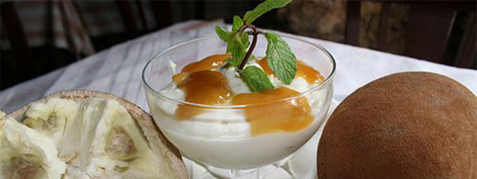
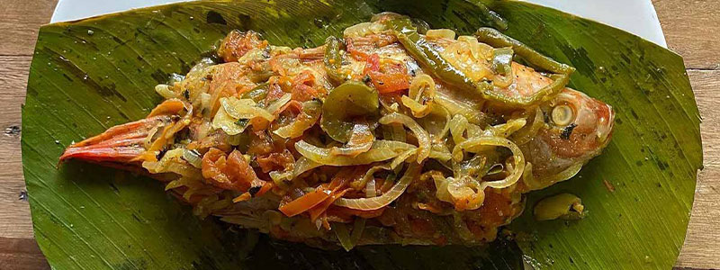
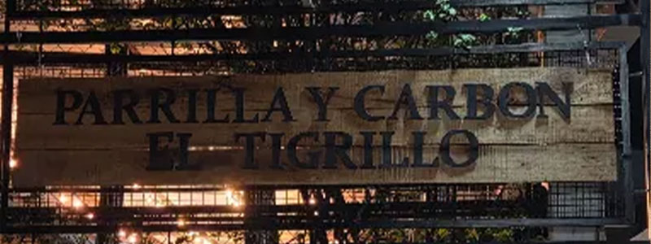

Postres Típicos: Crema de Copoazú
Déjate sorprender por la crema de copoazú, un postre suave, ácido y dulce preparado con una de las frutas más exóticas de la selva
ver más
Déjate sorprender por la crema de copoazú, un postre suave, ácido y dulce preparado con una de las frutas más exóticas de la selva
ver más
Descubre la patarashca, un plato autóctono preparado con pescado fresco envuelto en hojas de bijao y asado lentamente al carbón
ver más
Visita lugares icónicos como Parrilla y Carbón El Tigrillo para probar lo mejor de los asados y la cocina amazónica tradicional
ver más